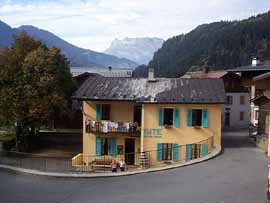

Gîte Michel Fagot (1120 m)

Département, commune : Haute Savoie, commune de Les Houches
Cartes : AsF© 16 (case D29), IGN Top25 3531 ET pli C2
Situation : centre ville, sous l'église. Adresse : .......
Propriétaires-Gardiens : -
Ouverture et gardiennage : ouvert et gardé du ... au ..., fermé hors cette période
Commodités : .
Accès : en voiture
Itinéraires à proximité : TMB, TPMB, GR5
Randonnées à partir du refuge :
guide ou site AsF© : Brévent, Aiguillette des Houches, Mont Lachat
autres randonnées : col de Voza (TMB)